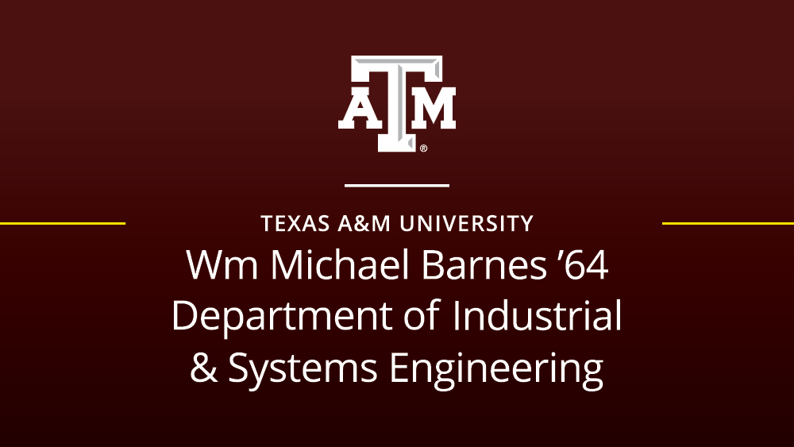

Human-AI Teaming
How trust, uncertainty, and role adaptation shape coordination between people and intelligent agents over time.
Human-Centered AI Researcher
Dr. Mustafa Demir is an associate research scientist at the Biodesign Institute, Center for Applied Structural Discovery, a faculty associate teaching statistics at the Ira A. Fulton Schools of Engineering at Arizona State University in Tempe, Arizona, and a scientist at the Wm Michael Barnes '64 Department of Industrial and Systems Engineering at Texas A&M University.
Dr. Demir received his Ph.D. in Simulation, Modeling, and Applied Cognitive Science from Arizona State University in Spring 2017, with a focus on team coordination dynamics and effectiveness in human-machine teaming. For the last 13 years, his research has been grounded in a human-systems engineering approach aimed at optimizing sociotechnical systems through more effective human-centered, collaborative, AI-powered systems.
Since 2012, Dr. Demir has published approximately 100 academic works in Turkish and English across journals and conference proceedings in the social and engineering sciences, achieving an h-index of 30. His scientific interests include human-machine teaming, advanced statistical modeling, dynamical systems modeling, team cognition, operations research, and he has been a Senior Member of IEEE since 2015.
Academic Home
My work bridges cognitive systems engineering, human factors, and interactive AI across interdisciplinary research environments.

Research
How trust, uncertainty, and role adaptation shape coordination between people and intelligent agents over time.
Using eye tracking, physiological measures, and interaction traces to model cognitive load, fatigue, stress, and attention.
Designing adaptive interfaces that support practical decision-making in health, learning, and safety-critical operations.
Selected Projects
Wearable stress detection and intervention support systems designed to translate biosignals into timely, human-centered assistance.
Adaptive human-machine interface behaviors for supervisory control settings where timing, trust, and workload interact dynamically.
AI tutoring and curiosity-regulation frameworks that support discovery, engagement, and deeper learning in complex environments.
Selected Publications
For the full and most up-to-date publication record, see Google Scholar.
Contact